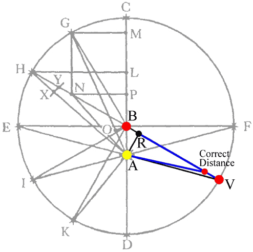
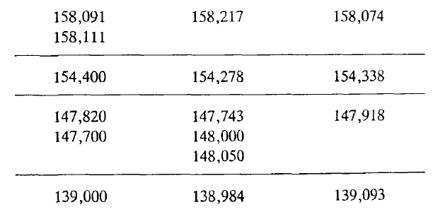

Chapter 56
Updated May 8th, 2007 -- errors corrected
“While I was anxiously turning this thought over in my mind, reflecting that absolutely nothing was accomplished by chapter 45, and consequently my triumph over Mars was futile, quite by chance I hit upon the secant of the angle 5°18′, which is the measure of the greatest optical equation. And when I saw that this was 100,429, it was as if I was awakened from sleep to see a new light…” (p.543)

Kepler has now developed the way to get the correct distances of the planet from the sun, by using a technique that ends up cutting off half as much of a lunule as before. Return to the diagram for the proposed circular orbit from chapter 40. The planet used to be at V, but now, the planet will still be in the direction of V (as seen from the center B, but will have a length not equal to BV, but rather to RV, where R is the perpendicular from A to the line from V through center B. You can see that a new, smaller red spot has been made close to V. (Do you know why Kepler says that this is "substituting the radius for the secant"?) This is the corrected location of the planet. Note that there is no longer rotation around an epicycle: the planet instead reciprocates along the line of distance.
(NB: If you print this out and try it with a compass, you'll find a slight exaggeration in this diagram: Mars should actually be closer to V.)
Here you have an animation of this process drawn along the entire orbit. The two blue lines are always the same length. Note that the path is not perfectly elliptical, but is what Kepler will later call, in chapter 58, “puff cheeked.”
The Sun-Mars distance is constructed to be equal to the blue-green distance. This image is interactive: click on it, then the s and x keys adjust the eccentricity. The spacebar pauses. Use a and z to adjust the speed.
Testing his hypothesis
Does this technique create the correct lengths? Presented here is the table at the conclusion of chapter 56, where Kepler announces success: the results of this method match the true Mars-sun distances as determined in chapter 51.

It appears, then, from the most reliable observations, that the course of the planet through the ethereal air is not a circle, but an oval figure, and that it reciprocates... (Chapter 57, p. 547)
| Next |